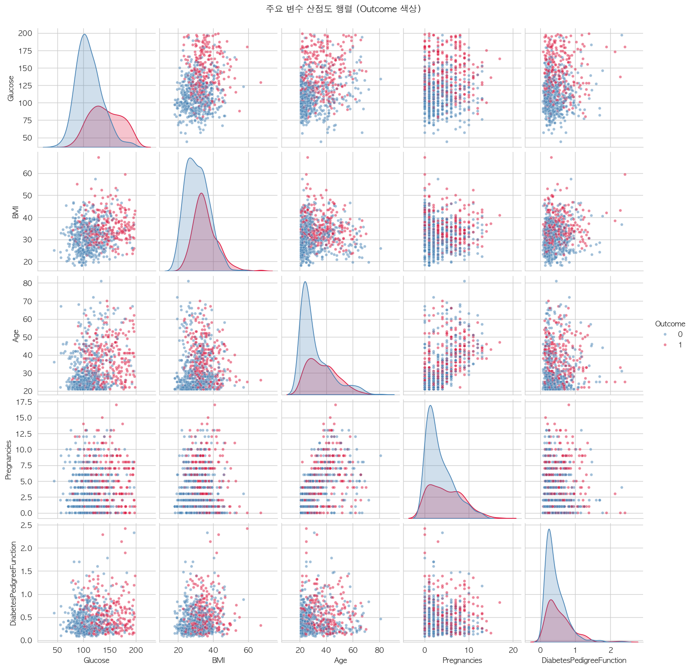
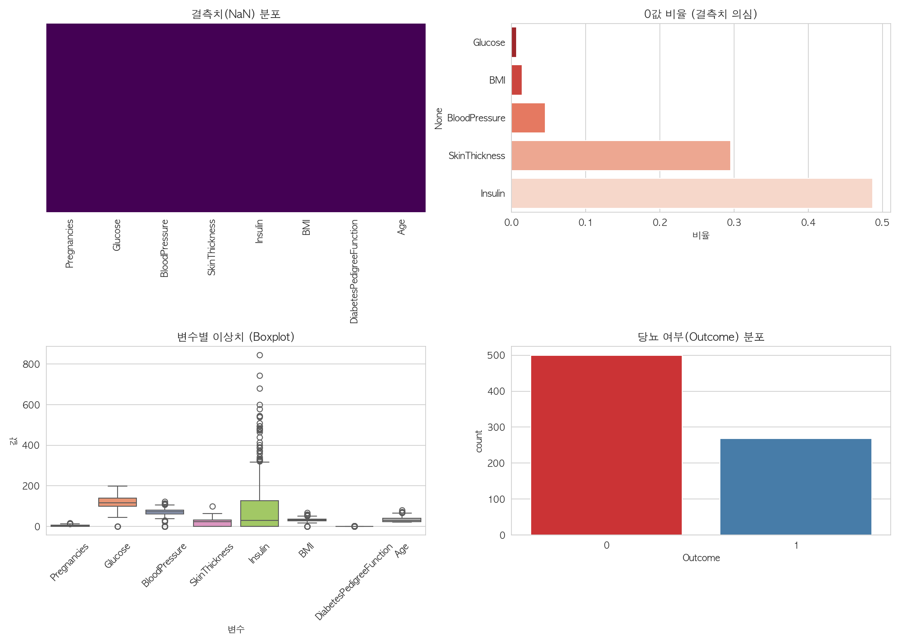
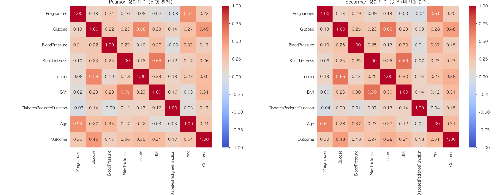
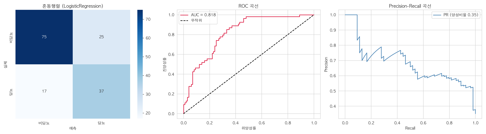
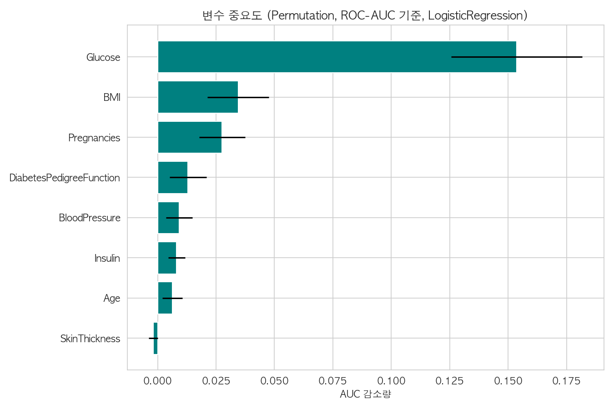

768명의 기록, 8개의 변수.
무엇이 실제 신호이고, 무엇이 착시인가.
Pima 인디언 여성, 만 21세 이상. 한 집단·한 시점의 스냅샷. 표본 크기는 768명, 타깃은 당뇨 진단 여부.

NaN 결측치 0개, 중복 0개. 그러나 생리학적으로 불가능한 0값이 곳곳에 숨어 있다. 이는 실질적 결측치.

Outcome과의 Pearson 상관계수. Glucose가 압도적 1위, 그 뒤로 BMI·Insulin.

설명변수끼리 강하게 연결. 이 중복은 해석을 흔든다.
둘 다 체지방 측정. 독립된 두 신호가 아니라 하나의 현상을 나눠 담은 것.
대사 연결고리. 혈당과 인슐린은 같은 생리 기전을 공유.
나이와 임신 횟수는 함께 증가. Age 효과의 교란 요인.
순수상관(partial correlation). 교란 변수를 걷어내면 SkinThickness·Age의 기여가 무너진다.
Glucose만이 통제 후에도 살아남는다. SkinThickness는 BMI의 그림자.
Glucose는 원인이 아니라,
진단의 정의일 수 있다.
당뇨 진단 자체가 혈당 검사(OGTT)를 포함한다. 따라서 Glucose → Outcome 상관은 부분적으로 순환. “예측”이 아니라 “진단 일치”에 가깝다.
표본은 단일 코호트. 시간 정보 없음 → 선후 관계 추론 불가. 결측은 무작위라는 증거 없음.
교란·역인과·선택 편향이 모두 열려 있다. 데이터는 방향을 말해주지 않는다.
Glucose [.44, .55]는 견고. BloodPressure·Pedigree [.10, .24]는 방향만 신뢰.
전처리는 전부 Pipeline 안에서 학습 데이터에만 fit — 데이터 누수 차단. 클래스 불균형은 class_weight로 보정.
로지스틱 회귀 선택 (CV 0.839 vs RF 0.827). 테스트 성능.
| Metric | Value |
|---|---|
| Accuracy | 0.727 |
| Recall | 0.685 |
| Precision | 0.597 |
| F1 | 0.638 |
환자 3명 중 1명을 놓침. 스크리닝 용도라면 임계값 조정 필요.


Glucose 압도적 1위. 그다음 BMI·Pregnancies·Pedigree. SkinThickness 중요도는 사실상 0.
상관분석의 경고가 모델에서 재확인. 결측 지표 역시 예측에 기여 → 0값이 완전 무작위는 아니었을 가능성.
단, Glucose의 높은 기여는 진단 기준과의 순환성을 일부 포함.
다른 변수를 통제해도 살아남는 유일한 지표. 단, 진단 정의와의 순환성 유의.
BMI와 .65로 얽혀 있고, 통제 시 .08로 소멸. 독립 변수로 쓰지 말 것.
규제 로지스틱 회귀가 AUC .818. 복잡한 모델이 더 낫지 않았다.
다음 단계 — MICE 결측 보정 · 하위군 재검증 · 보정 곡선 · 외부 데이터 일반화.
Pima Indians Diabetes
EDA & Risk Model